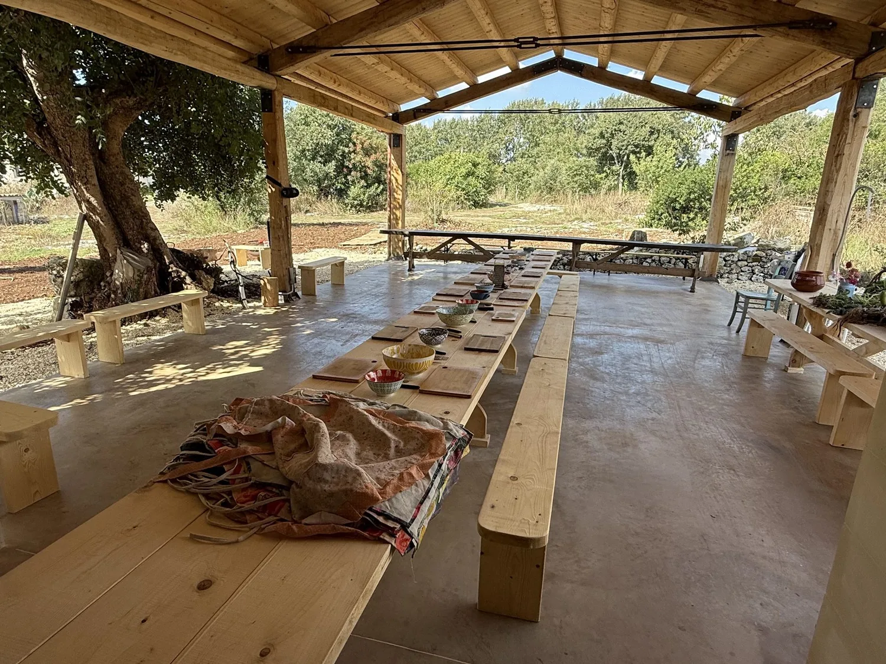
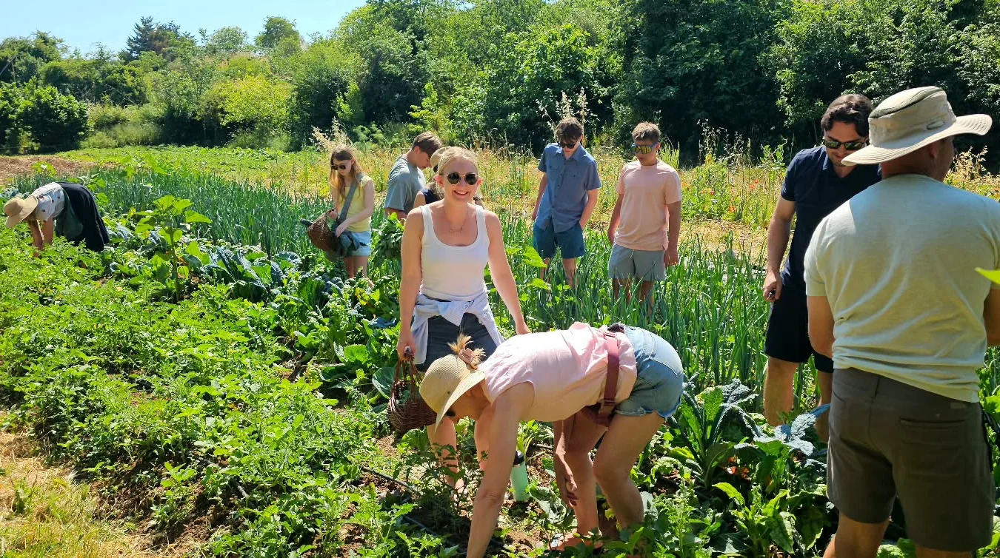
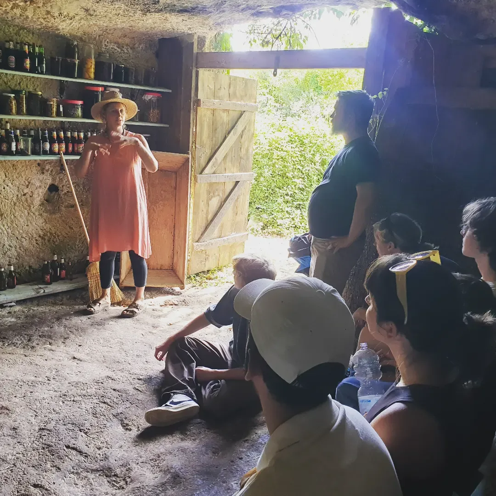
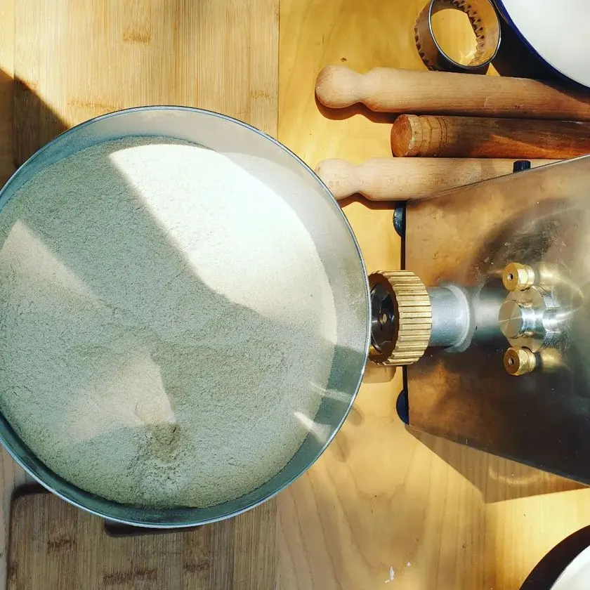
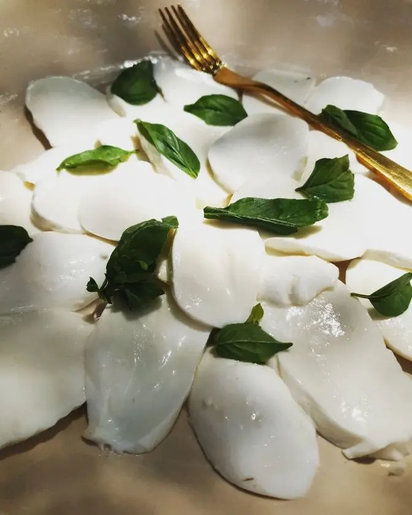

01 — The Garden
Lunch starts in the soil.
We gather together in the organic garden and collect everything for lunch. What is ripe today becomes the menu.
Every day of the week
A food journey into Sicilian tradition
The real cooking class of Italy is the Sunday lunch. It is where every Sicilian learns to cook: beside a grandmother who shares her best recipes, shows how to cut the vegetables, and teaches you to recognize a good ingredient. For one whole day, any day of the week, you cook with us the same way.
Together, we bring the tradition of the Sunday lunch back to life.

Book NowLike the colors of the rainbow and the notes of the scale.

We gather together in the organic garden and collect everything for lunch. What is ripe today becomes the menu.

Step inside, where a year of harvests waits in jars. Choose the wine, learn how we preserve the harvest, and taste cheese, honey and olive oil from our neighbors.
We share the secrets of our grandmothers’ fire cooking, side by side with you. The formula is an old one: the more people we are, the more food we can make.
The Sunday lunch is where Italians learn to cook. A grandmother shares her best recipes, shows you how to cut the vegetables, and teaches you to recognize a good ingredient. We cook 10 to 15 dishes together this way, wild fennel fritters among them. No one cooks alone.
Hear the story of heirloom wheat and stone-milled flour, then join the ravioli workshop: roll, fill and fold your own.
The moment everyone has been waiting for. Over a feast of garden dishes, we play an ancient ceremonial game at the table, sharing the best of ourselves through poetry, music, dance and storytelling. Children and adults play together.

In summer, swim in the river that carved the canyon. In cooler months, we gather in the farmhouse.
Everything in the day leads here. When the food is on the table, an ancient ceremonial game begins. One by one, we share the best of ourselves through poetry, music, dance and storytelling. It is how Sicilian families have always sat together, and it is how we inspire the next generation.
A traditional Sunday lunch gathers everyone around one table. The more we are, the richer the table becomes.
Discover the gameSee the days that are open and book right here.
Calendar not showing? Open the booking page.






Sunday lunch, served every day of the week. Choose your date and we will send everything you need.